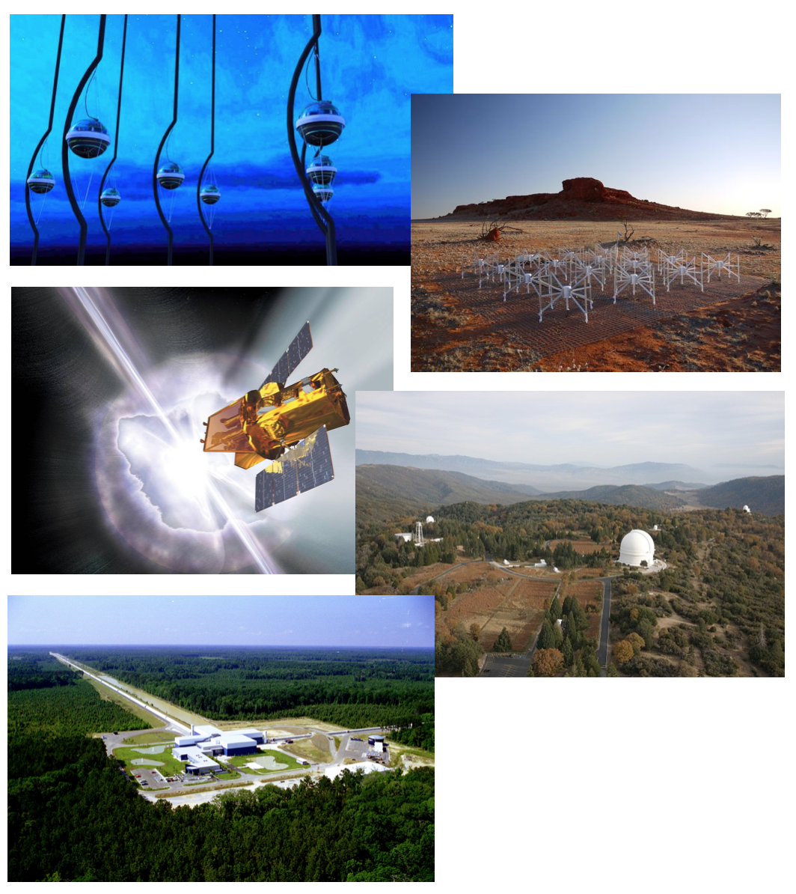
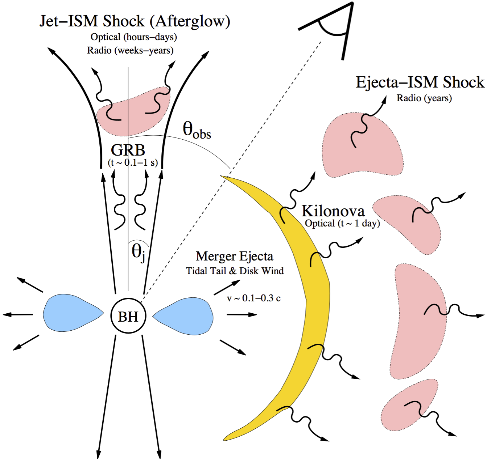
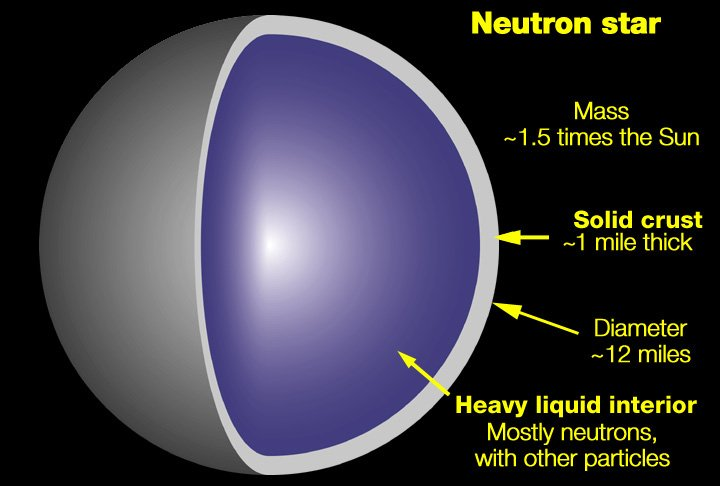
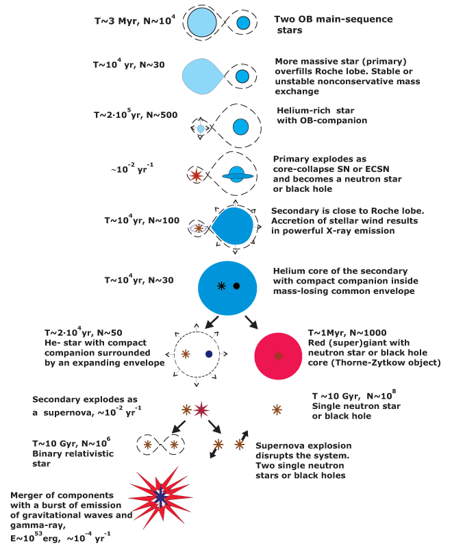
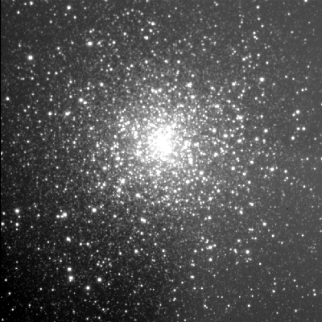
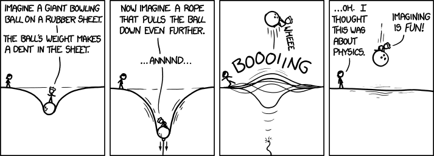
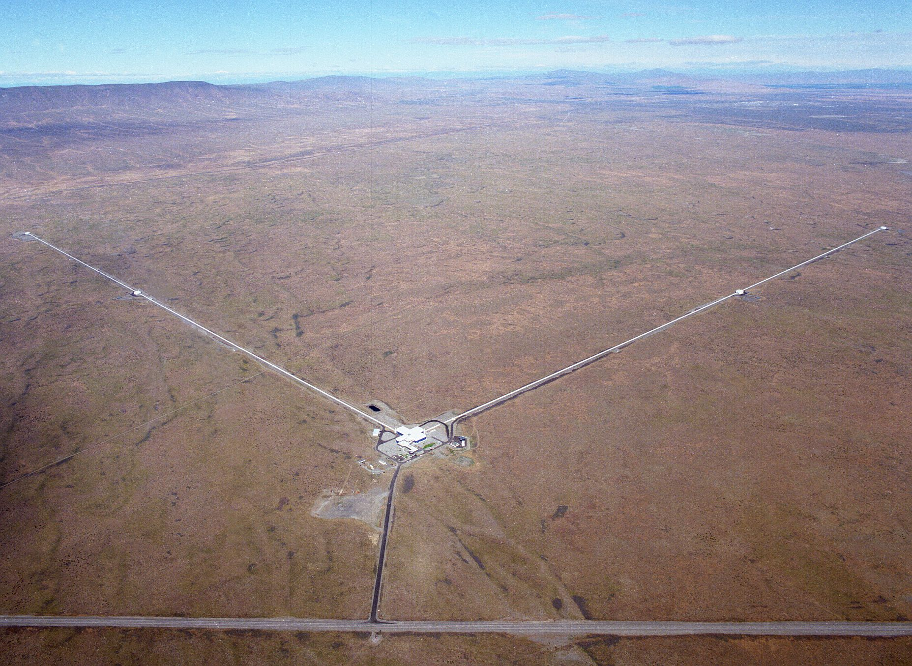

Compact Object Binaries: from Modelling to Observation
Branson Stephens
Center for Gravitation, Cosmology, and Astrophysics
University of Wisconsin-Milwaukee
December 4, 2015

Multi-messenger astronomy
|  |

Source: Metzger & Berger, Astrophys. J. 746, 48 (2012) |
Outline
- Introduction
- Numerical relativity
- Eccentric black hole-neutron star mergers
- LIGO and computing infrastructure
Introduction
Black holes

Image credit: NASA Chandra X-Ray Observatory
Neutron stars
Image credit: NASA Goddard
White dwarfs
Image credit: NASA/ESA
How compact are compact objects?
| Object | M (M☉) | R | M/R |
|---|---|---|---|
| Cygnus X-1 | 10 | 29 km | 0.5 |
| J0737-3039A | 1.34 | ~12 km | 0.16 |
| Sirius B | 1.05 | 5.15 × 103 km | 3 × 10-4 |
| Sun | 1.0 | 6.96 × 105 km | 2 × 10-6 |
| Earth | 3.0 × 10-6 | 6.37 × 103 km | 7 × 10-10 |
| BCS | 3.36 × 10-29 | 24.7 cm | 2 × 10-25 |
Note: (Mostly) using geometrized units with G=c=1, such that 1 M = 1.99 × 1033 g = 1.47 km.
Binary formation in the field
From Konstantin A. Postnov and Lev R. Yungelson, Living Rev. Relativity, 17, 3 (2014), Fig. 7.
Binary formation in clusters
Image credit: NOAO
Gravity as curvature
Image credit: XKCD
The Einstein equations
$$ R_{ab} = 8\pi(T_{ab} - \frac{1}{2}g_{ab}T) $$where the Ricci tensor, \(R_{ab}\) encodes the change in a vector parallel-transported around a closed curve. It is calculated by taking derivatives of the connection:
$$ds^2 = g_{ab} dx^a dx^b$$ $$\Gamma^c{}_{ab} = \frac{1}{2}g^{cd}[g_{ad,b} + g_{bd,a} - g_{ab,d}] $$ $$R_{ab} = \Gamma^c{}_{ab,c} - \Gamma^c{}_{cb,a} + \Gamma^d{}_{ab}\Gamma^{c}{}_{dc} - \Gamma^{d}{}_{cb}\Gamma^{c}{}_{da}$$Gravitational waves
$$ g_{ab} = \eta_{ab} + h_{ab}, |h_{ab}| \ll 1 $$
$ \Box h^{TT}_{jk} = 0, $ where $ h^{TT}_{jk} = h_{+}e^{+}_{jk} + h_{\times} e^{\times}_{jk} $
$$ h^{TT}_{jk} = \frac{2}{r}\frac{G}{c^4}\ddot{I}^{TT}_{jk} \left(t - \frac{r}{c}\right) $$GW-induced orbital decay
Orbits decay on a timescale given by:
$$ t_{\mathrm{merger}} \sim \frac{5}{256}\frac{c^5}{G^3}\frac{a^4}{M^2\mu} $$where $M = M_1 + M_2$ and $\mu = M_1 M_2 / (M_1 + M_2)$ (see Shapiro and Teukolsky, 1983). For the double pulsar J0737-3039 with a period of 2.4 hours, $t_{\mathrm{merger}} \sim 83$ Myr.
Expected merger rates
| Rate (Gpc-3yr-1) | aLIGO detections (yr-1) | |
|---|---|---|
| NS-NS | 103 | 40 |
| BH-NS | 30 | 10 |
| BH-BH | 5 | 20 |
see the Observing Scenarios document. Rates for dynamically formed binaries in globular and nuclear clusters are likely to be comparable (Lee et al. 2010) or even higher (Rodriguez 2015).
What makes these mergers interesting?
- tests of general relativity in the strong field regime
- high-energy astrophysics: GRBs, r-process, kilonovae
- constraints on the NS equation of state
- multi-messenger astrophysics: gravitational waves, electromagnetic radiation, neutrinos
Numerical relativity
Collaborators: Matt Duez, Yuk Tung Liu, Stu Shapiro
Target applications
- collapse of hypermassive NSs (Duez, Liu, Shapiro, Shibata, & Stephens, PRL 96, 031101 2006)
- magneto-rotational collapse in massive stars (Liu, Shapiro, Stephens, PRD 76, 084017 2007)
- post-collapse disk evolution (Stephens, Liu, Shapiro, PRD 77 044001 2008)
The 3+1 splitting

$$\gamma_{ab} = g_{ab} + n_a n_b$$
where
$$ n_a n^a = -1, n^a = \left( \frac{1}{\alpha}, -\frac{\beta^i}{\alpha}\right), n_a = (-\alpha, 0,0,0) $$$$ ds^2 = -\alpha^2 dt^2 + \gamma_{ij}(dx^i + \beta^i dt)(dx^j + \beta^j dt) $$
Einstein in 3+1
Evolution:
\begin{align} \partial_t \gamma_{ij} =& - 2\alpha K_{ij} + \mathcal{L}_{\beta}\gamma_{ij} \\ \partial_t K_{ij} =& - D_i D_j \alpha + \alpha(R_{ij} - 2K_{ik}K^k{}_{j} + KK_{ij}) - 8\pi\alpha[S_{ij} - \frac{1}{2}\gamma_{ij}(S-\rho_S) + \mathcal{L}_{\beta}K_{ij} ] \end{align}Constraints:
\begin{align} R + K^2 - K_{ij}K^{ij} =& 16\pi\rho_S \\ D_i K - D_j K_i{}^j =& 8\pi S_i \end{align}Matter sources:
\begin{align} \rho_S =& n_a n_b T^{ab} \\ S_i =& -\gamma_{ia} n_b T^{ab} \\ S_{ij} =& \gamma_{ia}\gamma_{jb} T^{ab} \\ S =& S^i{}_i \end{align}The GRMHD equations
\begin{align} \nabla_b F^{ab} &= 4\pi\mathcal{J}^a & \nabla_a(n u^a) &= 0 \\ \nabla_b {}^*F^{ab} &= 0 & \nabla_a T^a{}_i &= 0 \\ F^{ab}u_b &= 0 & n_a \nabla_b T^{ab} &= 0 \end{align}$$T^{ab} = (\rho h + b^2)u^a u^b + (P + \frac{1}{2}b^2)g^{ab} - b^a b^b $$
Overview of numerical methods
- BSSN formulation: evolve 3-metric and extrinsic curvature instead of $g_{ab}$
- 2nd order, finite differencing for spacetime
- Godunov-type hydro scheme (HLL fluxes and PLM, PPM reconstruction)
- flux constrained transport (Toth, JCP 161, 605, 2000)
- black hole excision
Eccentric BH-NS mergers
Collaborators: William East and Frans Pretorius
Why investigate eccentric binaries?
- possibly significant rates
- distinctive GW signals
- potentially interesting EM counterparts
Problem setup
A capture binary forms if
$$ \frac{1}{2}\mu w^2 + \delta E(b,w) \le 0 $$
for Newtonian hyperbolic orbits,
$$ r_p = \frac{b^2 w^2}{2M} + O(w^4) $$
we take $w = 1000$ km/s.
GR code of Pretorius, et al.
With coordinates chosen such that $\Box x^a = \mathcal{H}^a(t,x^i)$ (generalized harmonic), the metric evolution equation becomes wavelike:
$$ \frac{1}{2} g^{cd} g_{ab,cd} + g^{cd}{}_{(,a} g_{b)d,c} + \mathcal{H}_{(a,b)} - \mathcal{H}_c \Gamma^c{}_{ab} + \Gamma^c{}_{bd}\Gamma^d{}_{ac} = -8\pi(T_{ab} - \frac{1}{2}T) $$- constraint violations propagate away and are damped
- first successful BBH simulations (2005)
- existing parallel AMR framework
Numerical techniques
- 4th order finite-difference metric evolution with excision and constraint damping
- Godunov-type finite volume hydro scheme
- approximate Riemann solvers: HLL, Roe, Marquina
- reconstruction of primitives: PLM, PPM, WENO5
- flexible EOS specification ($\Gamma$-law, piecewise polytropic, tabular)
PAMR
Parallel Adaptive Mesh Refinement
- defines data structures and grid hierarchy
- handles communication between grids
- syncing
- injection (restriction)
- interpolation (prolongation)
- C to V and V to C operations
- distributes grids over multiple processors
- handles I/O
AMRD
Adaptive Mesh Refinement Driver
- implements Berger-Oliger timestepping
- couples with multigrid solvers for elliptic-hyperbolic systems
- flags and clusters regions of the grid for refinement
- implements Berger-Colella flux correction
The Berger-Colella flux correction
Berger & Colella, JCP 82, 64 (1989)
Periastron radius dependence
 |
 |
 |
 |
 |
Stephens, East, Pretorius, ApJ 737, L5 (2011)
Below threshold: tidal disruption
Stephens, East, Pretorius, ApJ 737, L5 (2011)
Above threshold: final orbit
Stephens, East, Pretorius, ApJ 737, L5 (2011)
Studies of spin and EOS effects
East, Pretorius, Stephens, PRD 85, 124009 (2012)
Tidally induced f-modes
Stephens, East, Pretorius, ApJ 737, L5 (2011)
Tidally induced f-modes
 |
 |
| $|C_{22}/C_{00}| \sim 0.02, 0.18$ at $r = 0.4, 0.8M$ | $|C_{22}/C_{00}| \sim 0.03, 0.25$ at $r = 0.4, 0.8M$ |
East, Pretorius, Stephens, PRD 85, 124009 (2012)
LIGO Computing
Collaborators: Patrick Brady, Brian Moe, Roy Williams, ...
What is LIGO?
|  |  |
GW detection basics
|
from Pitkin et al., LRR, 2011. Must measure $$ h \sim \frac{\Delta L}{L} \sim 10^{-21} $$ |

Figure from LIGO Observing Scenarios document. |
LIGO data analysis: Matched filtering
LIGO data analysis: Unmodeled bursts
from GW100916 blind injection data release.
My role in LIGO
- GraceDB: a gravitational wave candidate event database
- LVAlert: the LIGO/Virgo Alert system
- the surrounding ecosystem
GraceDB has three primary charges:
- ingest and store information about candidate events
- expose information to users and followup processes
- send alerts about each new piece of information
GraceDB in context
How does GraceDB work?

The RESTful interface
REST (Roy Fielding, 2000) is a set of design criteria:
- addressibility - scoping information (which data) is in the URI
- uniform interface - action is specified by the HTTP method
- connectedness - the data are inter-linked
- statelessness - each request/response cycle happens in complete isolation
Resource Oriented Architecture (ROA) is a specific example of a RESTful architecture, characterized by: resources, their URIs, their representations, and the links between them (see Leonard Richardson & Sam Ruby, RESTful Web Services, O'Reilly 2007).
Authentication and authorization
GraceDB has several categories of users:
- super users (e.g., the EM Followup group chairs, control room operators)
- internal LVC users (e.g., data analysts, instrument scientists)
- electromagnetic astronomy MOU group
- public users
A day in the life of the GraceDB developer
- supporting users (on client usage, query construction, etc.)
- working with users to obtain the necessary auth credentials
- developing new features
- updating tickets
- preparing new releases of the client tools
Questions?
Extra slides
Expected merger rates: field binaries
| Rate (Gpc-3yr-1) | aLIGO detections (yr-1) | |
|---|---|---|
| NS-NS | 61 (52) | ~ 1 |
| BH-NS | 2.8 (3.0) | ~1 |
| BH-BH | 28 (36) | ~ 100 |
Dominik et al., ApJ 806, 263, 2015.
Expected merger rates: capture binaries
| Rate (Gpc\(^{-3}\)yr\(^{-1}\)) z=0.7, 0 | |
|---|---|
| NS-NS | 58, 32 |
| BH-NS | 34, 20 |
| BH-BH | 6, 3 |
from Lee, Ramirez-Ruiz, van de Ven (ApJ, 720, 953 2010), cf. Rodriguez et al. (arXiv:1505.00792), who predict 100 aLIGO detections per year
Motivation for numerical simualtions
- connecting the central engine back to observables
- understanding the source population
- understanding the spectrum of possible behaviors
The BSSN formulation
\begin{align} \phi &= \frac{1}{12} ln[det(\gamma_{ij})] \\ \tilde{\gamma}_{ij} &= e^{-4\phi} \gamma_{ij} \\ K &= \gamma^{ij} K_{ij} \\ \tilde{A}_{ij} &= e^{-4\phi}(K_{ij} - \frac{1}{3}\gamma_{ij}K) \\ \tilde{\Gamma}^i &= - \gamma^{ij}{}_{,j} \end{align}The stress-energy tensor
\begin{align} T^{ab} &= T^{ab}_{fluid} + T^{ab}_{EM} \\ T^{ab}_{fluid} &= \rho h u^a u^b + g^{ab} P \\ T^{ab}_{EM} &= \frac{1}{4\pi} \left(F^{ac}F^b{}_{c} - \frac{1}{4}g^{ab}F_{cd}F^{cd} \right) \\ &= b^2 u^a u^b + \frac{1}{2}b^2 g^{ab} - b^a b^b \end{align}where $F^{ab} = n^a E^b - n^b E^a + n_c \epsilon^{cabd} B_d$ and $b^a = B^a_{(u)} / \sqrt{4\pi}$.
The GRMHD equations: component form
\begin{align} \partial_t D &= - \partial_i(v^i D) \\ \partial_t (\sqrt{-g}T^t{}_i) &= -\partial_j(\sqrt{-g}T^j{}_i) + \frac{1}{2}\sqrt{-g}T^{ab}\partial_i g_{ab} \\ \partial_t (\alpha\sqrt{-g}T^{tt}) &= -\partial_i(\alpha\sqrt{-g}T^{ti}) - \sqrt{-g}T^{ab}\nabla_a n_b \\ \partial_t \tilde{B}^i &= -\partial_j(v^j \tilde{B}^i - v^i\tilde{B}^j) \\ \partial_i \tilde{B}^i &= 0 \end{align}Summary of tests:
- static and radially unstable NS evolution
- MHD Riemann tests of Komissarov (MNRAS 303, 343, 1999)
- magnetized Bondi accretion
- gravitational wave induced MHD waves
- magnetized Fishbone-Moncrieff torus evolution
Applications:
An application problem: mangetized hypermassive neutron stars
 |
 |
Principal magnetic effects
| magnetic braking | magnetorotational instability |
 |
 |
(see, e.g., Spriut A&A 349, 149, 1999) |
(see Balbus & Hawley RMP 70, 1, 1998) |
Evolution up to collapse
Funnel-wall outflows
 |
 |
 |
 |
Behavior with varying seed field strength
 |
 |
Evolutions in the Cowling approximation
The Cowling approximation refers to evolving the fluid on a frozen spacetime background.
| Model | tex | tCowling | tend |
|---|---|---|---|
| Star A | 2570 | 2997 | 4909 |
| Star C | 941 | 1221 | 3097 |
(Note: 1000 M ~ 13 ms.)
Star A: Stiff EOS
 |
 |
 |
 |
 |
 |
Star C: Hybrid EOS
 |
 |
 |
 |
 |
 |
Stars C1 and C2: Seed-field effects
|
|
 |
Stars C1 and C2: Mass fluxes
 |
 |
Stars C1 and C2: Fluxes compared
 |
 |
Gauge conditions
We usually take $H_i=0$ and
$$ \Box \mathcal{H}_t = -\xi_1 \frac{\alpha - 1}{\alpha^\eta} + \xi_2 \mathcal{H}_{t,a}n^a $$where $\eta =6$, $\xi_1=100$, $\xi_2=10$.
Constraint damping
The definition of the gauge source functions provides a set of constraints:
$$ C^a = \mathcal{H}^a - \Box x^a $$To improve stability, we add a term to the Einstein equations proportional to the constraint:
\begin{align} \frac{1}{2} g^{cd} g_{ab,cd} + g^{cd}{}_{(,a} g_{b)d,c} + \mathcal{H}_{(a,b)} &- \mathcal{H}_c \Gamma^c{}_{ab} + \Gamma^c{}_{bd}\Gamma^d{}_{ac} \\ + \kappa \left(n_{(a}C_{b)} - \frac{1}{2}g_{ab}n^c C_c\right) &= -8\pi(T_{ab} - \frac{1}{2}T) \end{align}In this extended system, the constraints effectively obey a damped wave equation:
$$ \Box C^a = -R^a{}_b C^b + 2\kappa \nabla_b \left[n^{(b}C^{a)}\right] $$Code tests
- 1-D shocks following RAM paper
- 2D relativistic Riemann problem
- Emery step
- boosted Bondi accretion
- NS-NS relativistic $\gamma = 2,5$ head-on collisions
Waveforms
 |
|
 |
 |
$$r_p=5.5, a=+0.5$$
$r_p = 7$ 2H EOS
Mass transfer in the 7, 2H case
Annotation: feedback on an event
Annotations refer to anything uploaded after the initial event description. This includes:
- skymaps
- PSD data files and plots
- glitch timeseries plots
- analyst comments
- labels (i.e., 'EM_READY')
- VOEvents
- followup observation footprints
- basically anything (audio files, GCN Circulars, etc.)
The source: data analysis pipelines
- cWB: Coherent Wave Burst
- gstlal: gstreamer-basted pipeline with the LIGO Algorithm Library (LAL)
- gstlal-spiir: GPU-accelerated with IIRs
- MBTAOnline: Multiband Template Analysis
GCN/TAN: Alerts outside of LIGO/VIRGO